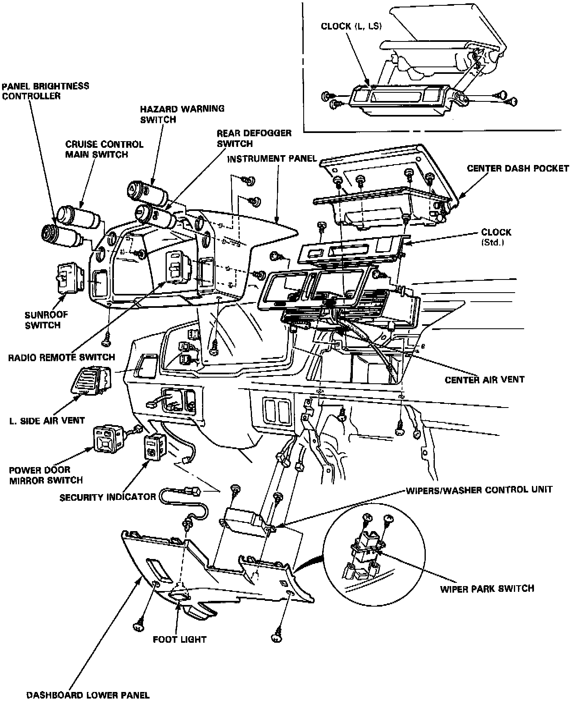
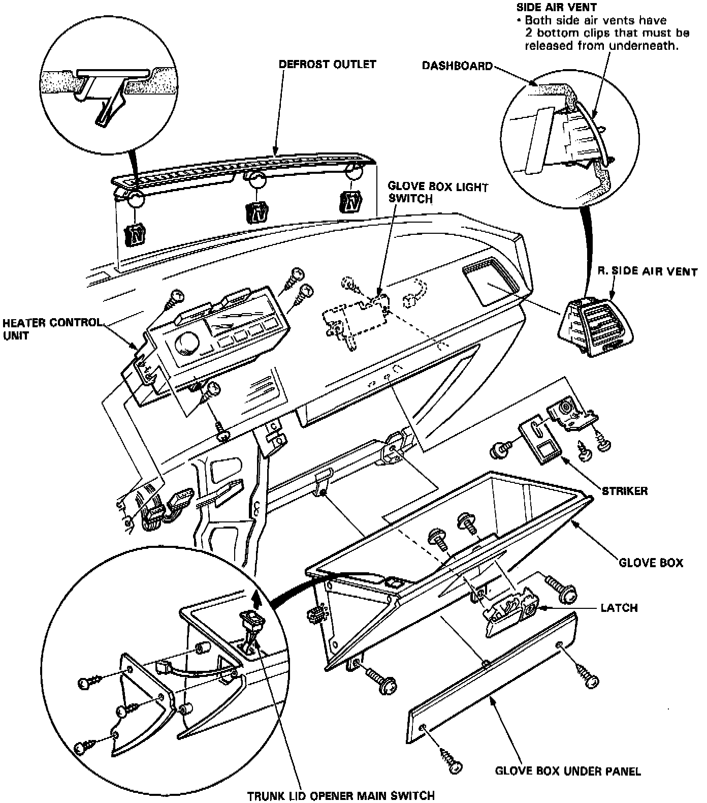

Operation CHARM
: Car repair manuals for everyone.
Home
>>
Acura
>>
1987
>>
Legend Sedan V6-2494cc 2.5L SOHC FI
>>
Repair and Diagnosis
>>
Body and Frame
>>
Interior Moulding / Trim
>>
Dashboard / Instrument Panel
>>
Service and Repair
>>
Dash Component Removal and Installation
>>
Coupe
Coupe


DASHBOARD COMPONENTS REMOVAL/INSTALLATION
Refer to images for details of dash component removal and installation.